Reverse
Lesson1 保护和破解的思路
软件保护：对抗静态反编译和动态跟踪。
比如我们有一个比较密码的strcmp(input,password) 拿明文直接做比对一下子就破解了 引入一个加密函数f，对比较环节做改进。 strcmp(f(input),password) 这样子要破解这个软件，就需要看懂f求出$f^{-1}$。也可以暴力修改逻辑跳过。 90 90 nop nop
但是，还要保护exe防止逻辑被修改。不能让别人跳过从而暴力破解。 保护的常用办法之一，可以对那一段代码进行加密。引入decode函数。 为了防止破解者找到检测介质的代码，需要对检测代码进行保护。保护的手段就是加壳。所谓加壳其实就是对检测代码进行加密，在运行时动态解密（decode函数）并执行。 获得函数f的地址————f 获得函数f的长度————在f后面弄一个没用的函数g,g-f 然后把中间的代码当做数组看待，对这一段关键代码设计解密函数，然后另外加密关键函数（可以用qv，当然也可以写一段脚本）。 源代码被加密，就不能静态分析（看不懂了）。 这样子，既让破解者不能暴力修改逻辑，也让静态分析失效。
但是，如果decode函数被破解者发现，可以先执行decode，获得decode后的代码保存，禁用decode。 用OD里头的memory down插件可以保存动态运行后的代码。然后用QV编辑二进制代码。 这样，我就能还原出原来未被加密的代码。然后就可以静态分析啥啥的了。 所以我们需要反跟踪技术，可以在decode里加入反调试的手段：
- 主动攻击：比如，抢占调试器（比如OD）的资源。这样能正常运行OD就不能正常运行decode，能正常运行decode就不能正常运行OD
- decode可以对自己实现多层加密。（比如分成十层，一层加密下一层）
- decode可以对自己进行虚拟机保护。把原本正常的指令变成一些奇怪的让人难以理解的指令。 参考：https://zhuanlan.zhihu.com/p/28176139
Lesson2 软件破解和保护
软件保护方法分类（根据介质划分）
-
已经成为历史————软盘指纹 杨道沅教授开发的LockUp， 他可以让计算机从保护模式强制返回实模式（怎么做到的？在dos中可以） 他通过在之前的代码作为秘钥解密之后的代码，这样子不可以设置软件断点（会把机器码首字节改成cc） 他把中断向量表都填满了，然你无法修改中断向量表（这样子怎么用中断？） 白老师————雷军的BitLock我用了一个小时就破解了
-
加密锁。参考链接一 软件开发者可以通过接口函数和加密锁进行数据交换（即对加密锁进行读写），来检查加密锁是否插在接口上；或者直接用加密锁附带的工具加密自己EXE文件（俗称“包壳”）。 ————可以替换加密锁中的读写函数（函数以lib形式提供给用户，可以在内存中替换） ————包壳目前难以破解
-
序列号。参考链接一 序列号跟机器特征码这个硬件信息有关。特征码通常跟网卡的mac地址、硬盘的序列号有关。 硬盘序列号有两种： (1)卷标号（格式时产生，可以更改） (2)固化在硬盘电路板上的序列号 Linux查看硬盘序列号：sudo hdparm -i /dev/sda。SerialNo
WordSmith的破解
弹窗切入口：DestroyWindow、messageBox；字符串比较 白老师的主页有教程。上课讲了另一种思路，从弹窗入手。
- DestroyWindows函数在注册码判断错误之后发生。我们从这里切入往前查找。
- 我们对我们输入的注册码的地址设一个硬件断点。我们从这里切入往后查找。
- 这样子确定起点和终点，确定查找范围。这样子比较好。
检查传入的参数(push/reg)、返回值(rax)、变量名。 比如，发现用户的call，前面传入的参数就是关键信息，那么这个函数非常值得跟踪。回车进去看看。 对于WIN：注意内存的结构，高地址是系统内核函数，一般没必要跟踪。400开头的地址一般是用户代码区，跟踪价值大。
跟踪一个复杂的函数时，可以在call语句和下一条语句设两个断点，防止回不来。 回顾：使用函数的参数是[ebp+0xXX]，使用局部变量是[ebp-0xXX]，全局变量是[0xXX] 疑问：OD，符号表，是不是有什么联系。
有时候判断失败没有弹窗提示，有时候判断和输入分离的很远甚至要重新启动。 有些软件在用户输入注册码后并不弹框，而是把注册码写入某个文件或者注册表，当软件重新运行时才对注册码进行判断。对于这种情形，可以尝试以下方法: FileMon + RegMon = ProcMon 下载ProcMon
- RegMon工具可以监视软件向注册表里写了什么信息,再在以下函数上设断点进行跟踪:
- RegCreateKey() 打开注册表项
- RegQueryValue() 读注册表项
- RegSetValue() 写注册表项
- FileMon工具可以监视软件向文件写了什么信息，再在以下函数上设断点进行跟踪:
- CreateFile 打开文件
- CreateFileEx
- ReadFile 读文件
- WriteFile 写文件
- 第三种思路是设置消息断点：
WM_xxxx，可以搜索API手册。或者在MSDN中搜索。
根据判断句柄，判断消息是不是我需要跟踪的。
77D18731（Message Dispatcher），消息的分发中心。
我们需要观察传入的参数（push的参数，就在前面几条指令）结合手册对消息的参数说明设置条件断点。
第一个参数是handle，参数2=消息的ID，参数3=wParam，参数4=lParam。
例如WM_COMMAND，ID=111
//我们传入Message Dispatcher的参数是以下结构
//https://docs.microsoft.com/en-us/windows/win32/api/winuser/ns-winuser-msg
typedef struct tagMSG {
HWND hwnd; //翻译做句柄，可以认为是一个对一个窗口的编号，我们通过这个验证我们是否选中了正确的元素
UINT message; //消息的编号，我们需要过滤这个
WPARAM wParam; //参数，请查看手册对他的解释
LPARAM lParam; //参数，请查看手册对他的解释
DWORD time; //时间，不太重要
POINT pt;
DWORD lPrivate;
} MSG, *PMSG, *NPMSG, *LPMSG;
然后消息被转移给用户定义的MessageHandler，怎么找这个Handler呢？因为他定义在用户的代码段(.text 或叫 .code)，我们可以在这个内存块右击设置内存访问断点，然后设置访问-执行。
Lesson3 破解工具的使用:star:
OllyDbg(动态跟踪)
win32调试利器，对于64位的程序可以用xdg。
找main:main不是最先被执行的，前面有初始化代码。
push eax
push []
push []
call -> main
(如果IDA和OD位置一样，为什么要找main的特征？这个问题关乎到一个概念，叫做内存随机化。对于windows xp暂时没错，就是可以直接根据位置比对找。) 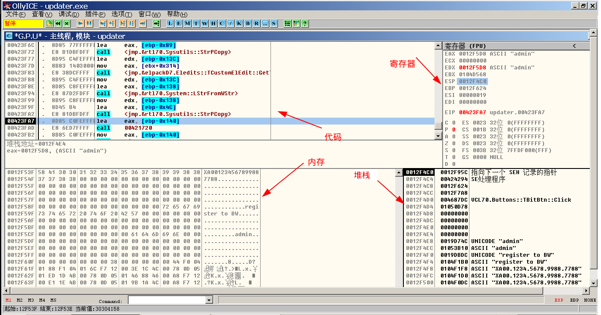
OD使用技巧：
- 位移：选中call敲
Enter，快速到达函数体。按ESC回退，～前进。 - 按
:对地址添加标签，最好在标签里把地址也写上，不然就不好找了。不过只能在代码窗添加标签，所以即使是数字也要在代码窗里添加标签。;添加注释。 - 修改内存的内容
- 修改某个地址的指令，在代码窗选中直接输入汇编指令即可。
- 在数据窗修改变量的值，先选中首字节，按十六进制字符打开修改窗口，然后就可以修改了。
- 想要修改寄存器的值，双击或直接输入十六进制字符（除了EIP寄存器，双击会定位到EIP）；想要修改EIP，点击代码窗选中位置，右击-此处为EIP。
- 上面说的三个修改的办法，都可以用
Alt+BackSpace撤销。 - 检索内存：查看-内存-
Ctrl+B-输入要查找的内容； Ctrl+G，跳转到特定内存地址，代码窗/内存窗/堆栈窗均可使用。- 在内存中选中位置，右击可以添加硬件断点。
F9继续执行（run），F8单步跳过（next），F4运行到此处（until），F7单步进入（step）。- 查看窗口可以查看进程的很多属性
- 查看-窗口，OD会列出所有窗口的handle(句柄)，标题，以及父窗口。
- 查看-可执行模块，可以查看使用的库函数。
- 查看-断点，管理现在设置的软件断点。
- 查看-内存，查看内存segment的属性（感觉和
cat /proc/pid/maps效果类似哈） - 查看-CPU，核心模块，就是上面的那个窗口图片。
Ctrl+A重新分析。- memory dump: 这是一个插件。数据窗随便选几个字节->右击选择memory dump->Range dump(注意填入的长度是16进制)
- 断点分成三种：
F2设置软件断点（break），Shift+F2设置条件断点，条件里面的数字默认是十六进制。通过把机器码改成cc可以实现。- 内存断点：OD的内存断点有两类：写入，访问PAGE_NOACCESS。只能设置一个内存断点。内存断点的原理：内存断点的本质是修改页属性，触发页异常，走0E号中断。所以，我们可能只对一个字节设置断点，实际上整个Page都会触发异常，只不过OD会帮助我们判断是停止执行还是继续。所以会慢一点。
- 硬件断点：对于x86来说可以设置4个硬件断点，断点类型可以是访问、写入、执行。利用硬件提供的调试寄存器设置断点。
对于WIN：注意内存的结构，高地址是系统内核函数，一般没必要跟踪。400开头的地址一般是用户代码区，跟踪价值大。
让控制流从函数中回到调用者：
- 查看堆栈中保存的返回地址
- 单步跳过F8到retn
- 如果当前的函数是系统的API，按
Alt+F9可以快速执行完API函数（或者说是返回到用户代码）；如果是用户的函数，按Ctrl+F9可以快速执行完函数。 （关于如何判断内核函数或是用户函数，简单来看可以看函数地址。一般来说用户函数地址前两位为0）
IDA pro(静态反编译)
C语言编译：任何函数或者全局变量在编译之后会在前面加上一个下划线，左侧快速定位 能识别出Lib函数调用名，OD不行。因为IDA把很多库函数的特征抽取形成一个数据库。 IDA支持多种CPU、多种编译器。
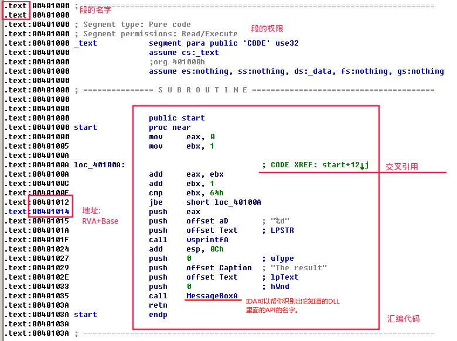 IDA使用技巧：
- 按
F5反汇编。虽然反汇编出的C语言也不一定好懂。 shift+F5可以看到识别用的特征库。再按"Insert"加入特征库。FLAIR可以从第三方的.lib文件（.lib, a static library on Microsoft platforms）（比如从开源的库源代码编译得到）中抽取特征生成一个特征库.sig，然后拷贝到IDA目录下的sig文件夹里。Alt+T可以搜索字符串，可能是字符串（不要加双引号，否则会被当成字符串的一部分）也可能是变量名（变量名是哪里来的？？IDA可能会自动生成一些变量名）。换句话说，你在汇编代码窗口看到的字都可以搜到。Alt+B可以搜索十六进制串，搜字符串需要加双引号。这个是不会搜变量名的。换句话说，这个搜的是程序的数据。- 交叉引用（Cross reference） ，IDA会在注释自动生成引用了变量/函数的地方，双击或回车可以跳到相关语句（按
ESC可以返回，Ctrl+Enter再前进）。如果交叉引用太多写不下了会加...，这时候“View-Open Subview-Cross Reference"，打开交叉引用窗口。 - 选择一个标号时，相同的标号会高亮。（puts static 编译 动态链接？？）
- 对函数名、变量名进行重命名：选中，按
n - 解释内存内容：IDA会自动的帮你识别代码、数据类型。
- 有时IDA在反编译的时候会弄错变量的宽度（所占字节数），用
Alt+D可以设置变量的宽度。 - 有时IDA会发生错误，比如错误把数据当成了代码。这时可以
- 用
u(undefined)可以让数据变成未定义的状态。按c可以强制转换成指令。（Code） - 用
d(data)可以让数据解释成数字类型。多按几次可以改变数字的宽度。 - 用
a(ASCII)可以让数据解释成字符类型。 - 用
c(code)可以让数据解释成汇编代码类型。 - 用
*可以让数据解释成数组。
- 用
- 有时IDA在反编译的时候会弄错变量的宽度（所占字节数），用
- 用
;添加注释，就和汇编一样。 - IDA也支持你自己编写插件。
Quick View（修改二进制文件）
在VC编译结果的exe，在内存中的地址，一般相差0x400000。
-
F5定位 -> 修改exe内容 -> Alt-F9 保存（光标切换到机器码部分才能保存）。 -
F2切换16bits/32bits asm。 -
F8查看文件头，再F3查看各个section。 -
Enter切换视图。 -
Insert可以选中/释放块，结合方向键；按住shift有很多对块的操作。
在QV中修改汇编代码：回车切换到汇编视图（注意有16位模式和32位模式） -> Tab在机器语言和汇编语言之间反复横跳。
QV自带加密功能，加密过程： 选中需要解密的块(insert开始标记，insert结束标记) -> F9 Crypt -> 编程加密，上面是参数。ds:si 指向首字节，cx 指向长度，es:di 指向一个可用的临时数组 -> F9 运行加密代码
选择一部分-按住shift =》 我们可以观察到下面的菜单变化了，再按F2可以保存选中的块 =》 选择Assemble类型保存，回车。
Alt+C在EditPlus里可以列块选择。
debug的用法（DOS调试）
debug是微软开发的调试工具。SoftIce和Windebug的使用方法和debug基本类似。
我不觉得学这玩意儿有啥用，Out Of date并且很弱。
| 命令格式 | 含义 |
|---|---|
| p | 单步执行(proceed): 相当于OD的F8 |
| t | 跟踪进入(trace into): 相当于OD的F7 |
| r | 观察所有寄存器当前的值 |
| u 地址 | 查看从该地址开始的汇编代码 |
| a 地址 | 从该地址开始输入汇编代码进行编程，其中a表示assemble即汇编(把汇编代码转成机器代码)。int 3相当于一个断点，它的机器码为0CCh。连续两次回车结束修改。 |
| d 地址 | 查看从该地址开始的内存变量，其中d表示dump |
| e 地址 | 修改从地址起存放的变量的值。按下空格修改下一个地址的内容，按回车停止修改。 |
| g=地址 | 从该地址开始运行程序 |
| g 地址 | 表示运行到此处 |
| q | 退出debug |
Lesson4 调试
断点
- 硬件断点：CPU内部有断点寄存器，当我们设置硬件断点的时候，断点寄存器会保存这个断点的一些属性（比如地址、rwx读写执行，宽度）。显然，我们在代码段中一般设置x，数据段设置rw。我们一共只能设置4个断点。右击设置。参考链接 硬件断点原理
- 内存块断点（内存访问、内存写入）：这个利用分页机制，通过改变page的RW权限来设置断点。右击设置。
- 软件断点：用F2设置；把指令的首字节改成cc 。可以通过设置条件改成条件断点。
- 条件断点在OD的设置方法：右击-断点-条件（或者直接
Shift+F2）输入条件表达式如[esp+4]==111(默认十六进制)
- 条件断点在OD的设置方法：右击-断点-条件（或者直接
破解白老师写的reverse2020
思路：
操作系统的版本老，没有随机化，程序的内存布局和进程的内存布局是对应的。也就是说IDA pro和OllyDBG的内存布局是对应的。
先用Ctrl+G寻找到DestroyWindow，在此处设置断点，让程序运行到此处。
然后观察堆栈，每个栈帧都标识着上一层的返回地址（OD里把一个个栈帧都标出来了） 观察调用链（忽略高地址的函数）：
4A4055 <- 49010FC( SUB4A4028 ) <- 401B0A( SUB48E07C ) <- 401C16( SUB401AD0 ) <- 4017A2(SUB4015F8)
在这些地方依次设置断点（堆栈中按Enter）运行，观察是否在点击按钮和弹出Bad之间断点生效。发现4017A2函数设置的断点生效，这个地址的指令在判断过程中间被执行。通过IDA和OD观察这个函数（sub4015f8），发现这个函数有重大嫌疑：
- 中间有用到我的输入
- 中间有ASCII字符串bad
- 在这个函数中完成了弹窗
所以下面对这个函数进行分析；从上到下有很多函数的调用，依次分析（后来才发觉可以在IDApro看看，并且反思的时候觉得或许应该关注地址较小的部分？）：
call 4d3d3c @__InitExceptBlockLDTC，观察参数和返回值感觉没什么用
call 4A0AF8 一开始看返回值我以为是strlen之类的，IDA告诉我是getText()
call 4E0580 不知所云
call 4D5F8c 刚开始看到他把我的输入传进去了以为嫌疑很大，但是发现他其实是sscanf()函数，把我的输入读进去当做一个十六进制数，ebx指向着这个数字，在堆栈窗口中锁定ebx，观察后面代码中对ebx进行的操作。
然后就发现接下来的代码就是对我的输入进行计算了
call 4015d8,call 4015e8 是循环移动。还有加加减减，异或，最后再和MachineCode进行比较。
修改cmp( edit_key , machinecode )之后的Zflag，发现弹窗Good。成功。
接下来就是把加密部分反过来变成解密部分写代码了。
疑问：
- 这里有很多似乎是库函数的东西出现在了.text段的高地址处，这个是因为我们的程序在编译的过程中使用了静态链接吗？是的。那还是有些函数在7开头的高地址？还是使用了动态链接的。这个自己怎么动手复现一下？VC中有选项。
- 有一个全都是jmp的地方（004E07A4开始），这是什么呢？看起来好像和WindowsAPI的调用有关系，是类似于全局跳转表之类的东西吗？
Lesson5 控制流和内存修改:star:
DOS中断修改
-
TF：跟踪标志，陷阱标志(Trace/Trap Flag) 若执行一条指令前TF为1，CPU在执行一条指令后，产生单步中断int 1，进入int 1对应的中断处理程序。我们通过修改Int 1中断向量抢占调试器的资源、指令加密解密。
-
我们如果修改中断向量表对应的函数，（比如时钟中断int 8，键盘中断int 9）我们就可以在产生时钟中断的时候执行我们自己的命令。比如可以锁血挂。homework2。
修改中断一般有两种模式：
- 中断链接模式，在执行完我们的中断处理代码之后控制流在回到老的中断代码
- 中断替换模式，执行完，记得给中断控制器发信号，直接iret。
- 第三种模式，一个病毒的例子
pushf push cs mov ax, offset returnhere push ax jmp dword ptr cs:[old21h]; 模拟int 21h returnhere: ...; 判断EXE、感染EXE jmp dword ptr cs:[old21h]
基本思路：
安装程序：
保存原来的中断向量CS：IP
cli ;禁用中断
修改原来的中断向量，指向我们的中断程序位置
sti ;允许中断
;如果设置了取消条件，那么之后再把中断向量恢复。
;如果要求程序驻留，需要用到AH=31h,int 21。而且要注意你能用的段寄存器只有CS。
中断程序：
保存所有用到的寄存器
程序主体
恢复所有用到的寄存器
iret(或者jmp到老的中断向量上，它里面肯定有iret)
Demo:
WIN32内存修改
CheatEngine是一个开源、强大的外挂工具。他可以对内存的值扫描，进行精确或者模糊的分析。
然后可以修改内存的值、冻结内存的值。甚至还可以对内存下断点。这个东西几乎就是一个调试器。
首先open目标进程，scan value寻找内存，找到之后可以右键add to list保存下来，对这个内存做冻结、修改等操作。我们还可以debug。
Microsoft Spy++可以查看目标窗口的Class和Title，这个可以作为FindWIndow的参数让我们找到窗口的handle。使用方法：Search-FindWindow。
| WIN32API（参数参考MicroSoft官方文档） | 作用 |
|---|---|
| GetWindowThreadProcessId | 根据窗口的句柄，返回窗口所在进程的进程号 |
| OpenProcess | 获得Process的Handle |
| ReadProcessMemory | 读取其他进程的地址 |
| WriteProcessMemory | 写其他进程的地址（Any process that has a handle with PROCESS_VM_WRITE and PROCESS_VM_OPERATION access to the process to be written to can call the function.）安全？ |
| FindWIndow | 根据窗口的类和名称，找到窗口的句柄 |
| VirtualProtectEx | 可以修改内存的rwx权限 |
WIN32的单步-一个奇怪的技术
和现在的操作系统一样，中断表已经被操作系统保护好了，不能被我更改了。
SEH（Self Exception Handler），也就是用户程序可以自己处理自己的异常。 关于SEH的原理，可以参考这两个链接：http://blog.csdn.net/chenlycly/article/details/52575260； https://www.microsoft.com/msj/0197/exception/exception.aspx 所以和DOS一样，我们也可以利用这个特性来单步中断加密解密程序。 另外，text section默认是不可写的，我们要在编译的时候加选项运行RWX。 通过写这个结构就能改变寄存器吗。
Lesson6 DOS MZ文件格式
MZ文件头
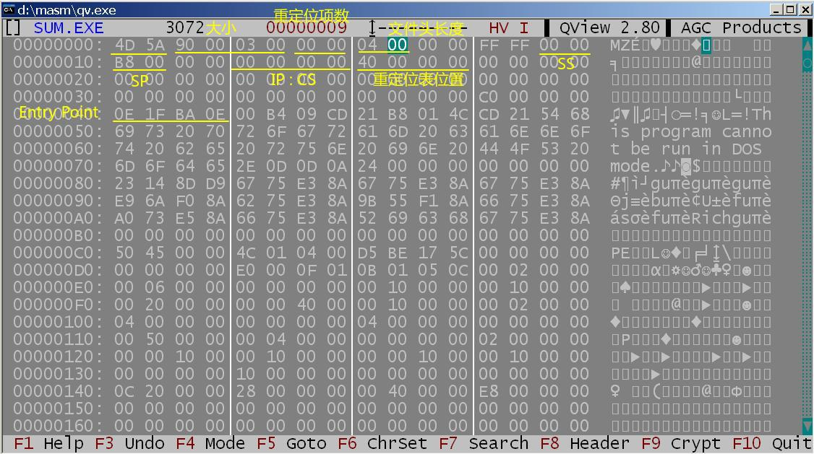
| 偏移 | 长度 | 含义 |
|---|---|---|
| 0x 0 | 2 | 4D 5A这个Magic Number表示可执行文件 |
| 0x2 | 4 | 4-5表示扇区数量(1个扇区512字节)，2-3表示最后一个扇区的实际使用字节(不过全0表示全用) 我们为什么要在文件头保存大小呢？文件系统里不是都有保存吗？但事实上文件头描述的长度是载入到内存的大小(除了文件头部分)，对于某些过大无法一次性载入的程序，可能采用“覆盖”技术一部分内容并不载入内存。 |
| 0x6 | 2 | 重定位项数 |
| 0x8 | 2 | 文件头的节长度=20h，字节长度200h |
| 0xA | 2 | 至少需要为exe分配的内存节长度 |
| 0xC | 2 | 至多需要为exe分配的内存节长度 |
| 0xE | 2 | SS地址（注意这里所有的段地址都是相对地址） |
| 0x10 | 2 | SP的值 |
| 0x12 | 2 | EXE校验值 |
| 0x14 | 4 | Entry Point，CS：IP（先IP再CS） |
| 0x18 | 2 | 重定位表偏移位置 |
| 重定位表 | 重定位表每一项指向需要重定位的段地址和偏移地址。每一项4个字节。 |
dos在完成重定位后，设置ds=es=psp，设置ss:sp的值，再jmp cs:ip。在DOS中重定位很简单，就是加上首段的地址。
DOS壳
壳是用来对抗静态调试的利器，对于动态调试也可以加大难度。
第三次的作业是简单的DOS程序壳的编写。首先是加密程序，这个问题不是很大。就是 加密+加上脱壳程序+修改文件头。
然后是添加上脱壳程序，这个程序还是有挺多tricky的。不过DOS壳的简单之处，在于没有什么动态链接、权限保护这些复杂的东西。脱壳要做的事情主要是：解密程序+返回到原来的程序。
主要问题是两个定位：
A：正确定位我在脱壳程序使用的变量。因为脱壳程序连接到了源程序上，原先的定位方式已经不准确了。
解决的办法是：利用CS作为代码段（因为CS是自动置位的，或者说在加密程序中修改文件头的时候调整好了），然后用 call next:; next; pop bx;。这样子可以获得next的真实位置。相当于有了一个定位的标准，可以利用它计算出我们shell的第一个地址。
B：正确的重定位源程序的重定位项目。因为源程序在加密后，原本自动的重定位就不能用了。我们需要手动的进行重定位。步骤如下
- 我们要利用文件头找到重定位项的相对位置。（利用上面的文件头的介绍）
- 利用程序的加载地址算出绝对位置，（这个要计算出程序的加载位置，
PSP+0x10。那么我们如何得到PSP呢？事实上，在程序载入的时候，会自动的把DS和ES设置成PSP。） - 对绝对位置的变量进行重定位。（在DOS中的重定位是很简单的，原先的段地址+程序的载入地址就好了）
;例程，这里的解密就是简单的异或
_IP = 14h
_CS = 16h
HEAD_LEN = 08h
LEN_SEC = 4h
LEN_REM =2h
RE_NUM = 6h
RE_ADDR = 18h
.386
code segment use16
assume cs:code
main:
push es
call next
next:
pop si
sub si,offset next-offset main ;main的真实地址
mov ax,es
add ax,10h
mov word ptr cs:[si+load_addr],ax ;程序的加载起始地址psp+0x10
jmp decipher
load_addr dw 0
decipher:
mov es,ax
xor edx,edx
xor eax,eax
mov dx,word ptr cs:head[si+LEN_SEC]
cmp word ptr cs:head[si+LEN_REM],0
je not_sub_1
sub dx,1
not_sub_1:
shl edx,9
add dx,word ptr cs:head[si+LEN_REM]
mov ax,word ptr cs:head[si+HEAD_LEN]
shl eax,4
sub edx,eax ;edx = program载入内存的长度
xor ebx,ebx
de_loop:
xor byte ptr es:[bx],33h
add ebx,1
cmp bx,0
jne not_flow
mov ax,es
add ax,1000h
mov es,ax
not_flow:
cmp ebx,edx
jne de_loop
reorient:
mov cx,word ptr cs:head[si+RE_NUM]
mov bx,word ptr cs:head[si+RE_ADDR]
re_loop:
cmp cx,0
je return
mov ax,word ptr cs:head[si+bx+2]
add ax,word ptr cs:[si+load_addr]
mov es,ax ;段地址
mov di,word ptr cs:head[si+bx] ;偏移地址
mov ax,word ptr es:[di]
add ax,word ptr cs:[si+load_addr]
mov word ptr es:[di],ax
sub cx,1
add bx,4
jmp re_loop
return:
pop es
mov ax,word ptr cs:head[si+_CS]
add ax,word ptr cs:[si+load_addr]
push ax
push word ptr cs:head[si+_IP]
retf
head:
code ends
end main
Lesson7 80x86保护模式程序设计
特殊的寄存器
80x86处理器提供了 4 个内存管理寄存器（GDTR、LDTR、IDTR 和 TR），用于指定内存分段管理所用系统表的基地址。
- GDTR和LDTR分别存储着global和local的descriptor table的基地址。
- IDTR存储着中断表的位置，可以认为是RISCV中对应于stvec。
- 任务寄存器TR用于存放当前任务 TSS 段的 16 位段选择符、32 位基地址、16 位段长度和描述符属性值。它引用 GDT 表中的一个 TSS 类型的描述符。

我们还有4个控制寄存器（CR0、CR1、CR2 和 CR3）用于控制和确定处理器的操作模式以及当前执行任务的特性。要记住的是CR0的第0位决定CPU处于保护模式还是实模式。

CR0格式描述：
| Bit | Name | Full Name | Description |
|---|---|---|---|
| 0 | PE | Protected Mode Enable | If 1, system is in protected mode(保护模式), else system is in real mode(实模式) |
| 1 | MP | Monitor co-processor | Controls interaction of WAIT/FWAIT instructions with TS flag in CR0 |
| 2 | EM | Emulation | If set, no x87 floating-point unit present, if clear, x87 FPU present |
| 3 | TS | Task switched | Allows saving x87 task context upon a task switch only after x87 instruction used |
| 4 | ET | Extension type | On the 386, it allowed to specify whether the external math coprocessor was an 80287 or 80387 |
| 5 | NE | Numeric error | Enable internal x87 floating point error reporting when set, else enables PC style x87 error detection |
| 16 | WP | Write protect | When set, the CPU can't write to read-only pages when privilege level is 0 |
| 18 | AM | Alignment mask | Alignment check enabled if AM set, AC flag (in EFLAGS register) set, and privilege level is 3 |
| 29 | NW | Not-write through | Globally enables/disable write-through caching |
| 30 | CD | Cache disable | Globally enables/disable the memory cache |
| 31 | PG | Paging | If 1, enable paging and use the § CR3 register, else disable paging. |
这些寄存器都有专门的指令来控制，不能直接用mov，具体的可以参考Intel的手册。
80x86提供了分段和分页两种内存保护的方式。分页在操作系统讲过了（虽然主要关注了RISCV，但是差不多），这里讲分段。
保护模式和实模式的区别主要在于段地址。实模式寻址就是段地址<<4+偏移地址。
我们来看保护模式。为了定位指定一个字节，程序必须提供一个逻辑地址。逻辑地址包括一个段选择符和一个偏移量。比如我们要在保护模式下访问10h:[10000h]的内容，过程是：我们在GDT表中用段地址10h寻找一个Descriptor，找到段首地址11223344h，那么我们寻址11223344h+10000h
段选择符Selector
 保护模式的分段机制保留了以前的段寄存器CS,DS,ES,SS, 并且增加了两个FS,GS。这些段寄存器里面保存的不再是段的基地址了, 而是一个段选择子, 段选择子是一个如下的结构:
struct SegSelector
{
unsigned int RPL : 2 bit;
unsigned int PI : 1 bit;
unsigned int Index : 13 bit;
}
- 请求特权级字段 RPL 提供了段保护信息，将在后面作详细说明。
- 表索引字段 TI 用来指出包含指定段描述符的段描述符表 GDT 或 LDT。TI=0 表示描述符在 GDT 中；TI=1 表示描述符在 LDT 中。
- 索引字段 Index给出了描述符在 GDT 或 LDT 表中的索引项号。
为了避免每次都要到内存中索引Descriptor的内容，段寄存器会缓存。但是这对我们来说是不可见的，我们可见的只是Selector部分。
GDT和Descriptor
 GDT表的地址存储在寄存器GDTR中。GDT表中的每一个Entry都是8 byte的 Descriptor(描述符)。
gdt+10h：FF,FF,44,33,22,93,8F,11
gdt+00h ...; 首个描述符为空描述符,不和任何段寄存器关联
gdt+08h ...
gdt+10h FFh
gdt+11h FFh; 斜体是段首地址, 粗体是(段长度-1)
gdt+12h 44h; 段首地址低16位的低8位
gdt+13h 33h; 段首地址低16位的高8位
gdt+14h 22h; 段首地址高16位的低8位
gdt+15h 93h; 段访问权限(access)
gdt+16h 0Fh; 最高位为粒度位,低4位为20位段长度的高4位
gdt+17h 11h; 段首地址高16位的高8位
- 段限长字段 LIMIT（Segment limit field） 段限长 Limit 字段用于指定段的长度。处理器会把段描述符中两个段限长字段组合成一个 20 位的值，并根据颗粒度标志 G 来指定段限长 Limit 值的实际含义。如果 G=0，则段长度 Limit 范围可从 1 字节到 1MB 字节，单位是字节。如果 G=1，则段长度 Limit 范围可从 4KB 到 4GB，单位是4KB。 根据段类型中的段扩展方向标志 E，处理器以两种不同方式使用段限长 Limit。对于向上扩展的段（简称上扩段），逻辑地址中的偏移值范围可以从 0 到段限长值 Limit。大于段限长 Limit 的偏移值将产生一般保护性异常。对于向下扩展的段（简称下扩段），段限长 Limit 的含义相反。根据默认栈指针大小标志 B 的设置，偏移值范围可从段限长 Limit 到 0xFFFFFFFF 或 0xFFFF。而小于段限长 Limit 的偏移值将产生一般保护性异常。对于下扩段，减小段限长字段中的值会在该段地址空间底部分配新的内存，而不是在顶部分配。80X86 的栈总是向下扩展的，因此这种实现方式很适合扩展堆栈。
- 基地址字段 BASE（Base address field） 该字段定义在 4GB 线性地址空间中一个段字节 0 所处的位置。处理器会把 3 个分立的基地址字段组合形成一个 32 位的值。段基地址应该对齐 16 字节边界。虽然这不是要求的，但通过把程序的代码和数据段对齐在 16 字节边界上，可以让程序具有最佳性能。
- Access，段描述符的第5个字节（从0开始计）：
- 4 bit段类型字段 TYPE（Type field）类型字段指定段或门（Gate）的类型、说明段的访问种类以及段的扩展方向。**该字段的解释依赖于描述符类型标志 S 指明是一个应用（代码或数据）描述符还是一个系统描述符。**TYPE 字段的编码对代码、数据或系统描述符都不同。
- 1 bit 描述符类型标志 S（Descriptor type flag）描述符类型标志S指明一个段描述符是系统段描述符（当S=0）还是代码或数据段描述符（当S=1）。
- 2 bit 描述符特权级字段 DPL（Descriptor privilege level）DPL 字段指明描述符的特权级。特权级范围从 0 到 3。0 级特权级最高，3 级最低。DPL 用于控制对段的访问。
- 1 bit 段存在标志 P（Segment present）段存在标志 P 指出一个段是在内存中（P=1）还是不在内存中（P=0）。当一个段描述符的 P 标志为 0 时，那么把指向这个段描述符的选择符加载进段寄存器将导致产生一个段不存在异常。有点像Valid bit，但是这个不是页表。
- 颗粒度标志 G（Granularity）该字段用于确定段限长字段 Limit 值的单位。如果颗粒度标志为 0，则段限长值的单位是字节；如果设置了颗粒度标志，则段限长值使用 4KB 单位。（这个标志不影响段基地址的颗粒度，基地址的颗粒度总是字节单位）。
我们来具体的看一下TYPE字段规定的段的权限类型：
- 如果描述符类型标志 S=1，那么是代码或者数据描述符。
- 如果TYPE的第3 bit=1，那么这个段是Code段。
- 0 bit = Access，表示是否已经被访问过。
- 1 bit = Write，表示是否可写。
W=1可写。 - 2 bit = Expand，表示段的扩展方向。
E=0向上扩展，E=1向下扩展（比如用于栈）。
- 如果TYPE的第3 bit=0，那么这个段是Data段。
- 0 bit = Access，表示是否已经被访问过。
- 1 bit = Read，表示是否可读。如果为0的话不可读仅执行。
- 2 bit = Comfirm，
- 如果TYPE的第3 bit=1，那么这个段是Code段。
- 如过描述符类型标志 S=0，那么是系统描述符。
- 分成TSS和Gate两种类型。
是不是觉得非常的复杂而不优美，比RISCV差远了。
权限保护
为了在各个代码段和数据段之间进行特权级检测处理，处理器可以识别以下三种类型的特权级：
- 当前特权级 CPL（Current Privilege Level）。CPL 是当前正在执行程序或任务的特权级。它存放在CS 和 SS 段寄存器的位 0 和位 1 中。通常，CPL 等于当前代码段的特权级。当程序把控制转移到另一个具有不同特权级的代码段中时，处理器就会改变 CPL。 当访问一个一致性（conforming）代码段时，则处理器对 CPL 的设置有些不同。特权级值高于（即低特权级）或等于一致代码段DPL 的任何段都可以访问一致代码段。并且当处理器访问一个特权级不同于 CPL 的一致代码段时，CPL 并不会被修改成一致代码段的 DPL。
- 描述符特权级 DPL（Descriptor Privilege Level）。DPL 是一个段或门的特权级。它存放在段或门描述符的 DPL 字段中。
- 请求特权级 RPL（Request Privilege Level）。RPL 是一种赋予段选择符的超越特权级，它存放在Selector的位 0 和位 1 中。处理器会同时检查 RPL 和 CPL，以确定是否允许访问一个段。
检查方法：
max{CPL,RPL} <= DPL时，当前进程才可以访问该DPL对应的数据段（允许高级的访问低级的数据），或者是通过Gate的访问。min{CPL,RPL} >= DPL时，当前进程才可以访问该DPL对应的代码段（允许低级的调用高级的代码）（这里的调用指的是call，jmp只能在同级别之间跳）（不知道retf能不能实现绕过这个限制）- CPL,DPL,RPL的区别。CPL是当前进程的权限级别(Current Privilege Level)，RPL说明的是进程对段访问的请求权限(Request Privilege Level)，DPL存储在段描述符中，规定访问该段的权限级别(Descriptor Privilege Level)。一般情况下，CPL==RPL，但是在Gate这个场景下，CPL和RPL就不同了。RPL可以认为是老CS(调用者)的CPL，CPL是现在CS的CPL。 这样可以实现low previlege call high previlege之后，依然无法访问那些不能访问的数据。
Gate
比如，我们在ring3调用ring0的readfile()函数，那么我们岂不是可以获得0级别然后在任意地方读写了？ 当我们从ring3 call ring0(准确来说是低权限调用高权限代码)的时候，需要 call gate。
gate描述的是一个内存的“点”或者说描述的是一个函数指针，指向一个函数。
gate的结构：
offset_0_15 +0+1 目标函数的偏移地址的低16位
selector +2+3 目标函数的段地址
arg_count +4 目标函数需要的参数
attrib +5 权限，格式参见上面的access
offset_16_32 +6+7 目标函数的偏移地址的高16位
为啥不能直接call ring0的代码？
当我们call 10h:00000000h时（假设10h处是gate）,我们会根据gate的内容跳到对应的函数。
在call gate的时候，我们会切换堆栈（tss中的ss0/ss1/ss2/ss3）（防止堆栈内的老cs被修改，可以通过多线程技术）
push old cs ;然后就可以知道调用者的权限了
arpl ax,cx ;其中，cx=cs，ax是调用者传过来的段地址 if(ax.RPL < cx.RPL) ax.RPL = cx.RPL
call gate： max{CPL,RPL} <= gate.DPL，虽然权限检查和数据段一样，但是gate其实是指向一个代码段的指针。通过了这个权限检查就能取出这个指针，然后再进行min{CPL,RPL} >= DPL。s
TSS
从3=>0用call gate\task state segment(TSS) 用retf实现从0=>3
TSS是一个结构，用来保存当前进程的所有寄存器。从常见的通用寄存器到cr3(页目录表寄存器)等。
3对堆栈指针：ss0:esp0, ss1:esp1, ss2:esp2
A call tss_B, tss_B成员有一个back_link指向 tss_A。(这里是利用tss切换任务，和平时的call是不一样的，不会在堆栈里push东西)。
硬件会自动的把A所有寄存器的状态保存到tss_A中，然后从tss_B中加载寄存器
在这种情况的call要用iret返回，不能用retf或ret。
tss在GDT表也有一个tss descriptor. Intel规定每一个任务是不能被重入的。tss描述符的access=89h(not busy) or 8Bh(busy)。处于busy状态的tss是不能被call/jmp的。
segment descriptor cache(shadow) 段寄存器在CPU内部有一个影子描述符 只要你不更改cs，我们就用影子描述符。
Lesson8 Windows PE文件格式⭐️⭐️
白老师讲的都是win32，64位的PE文件结构大同小异，但是偏移地址肯定是不同了。
你可以认为PE文件是一个DOS下的可执行文件（MZ格式），因为他有一个DOS Header和DOS Stub，如果在DOS运行的话会输出一行“This program cannot be run in DOS"然后退出。但是我们并不关心PE的DOS部分，我们唯一需要关注的是一个”e_lfanew"成员，表明了PE文件头在PE文件中的偏移。
- DOS头+3C(e_lfanew)：此处有一个指针，指向PE头。接下去我们讲述的地址，基地址都是此处。
PE Header
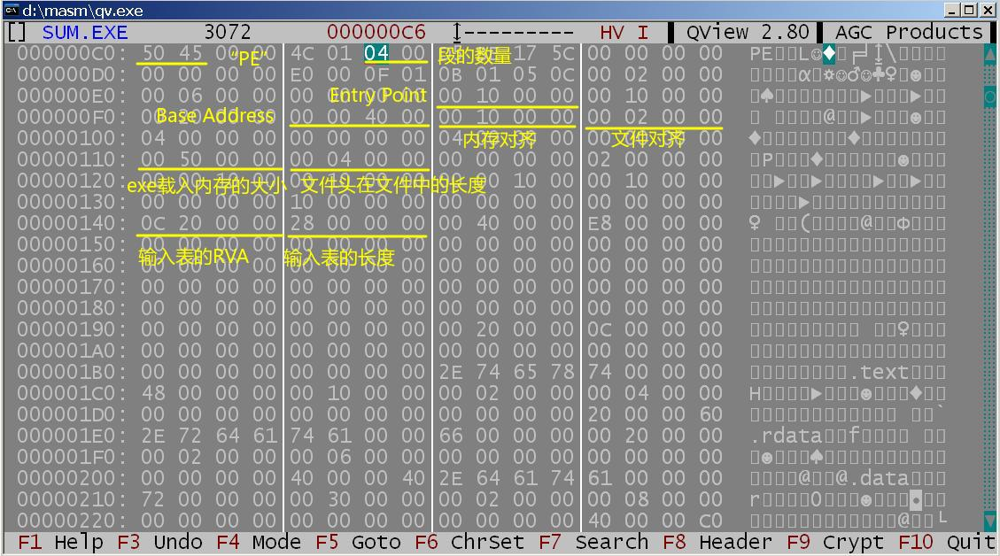 qv-F8可以查看文件头
我们定位到这里，看到两个字节50,45，就是PE，从此处开始是真正的PE文件头。PE文件头中描述的内存地址均采用RVA（reletive virtual address），RVA必须加上base address才得到真正的地址。PE文件头也载入了内存。
我们来看PE头的结构(来自看雪论坛的整理)：
typedef struct _IMAGE_NT_HEADERS {
DWORD Signature;
IMAGE_FILE_HEADER FileHeader;
IMAGE_OPTIONAL_HEADER32 OptionalHeader;
} IMAGE_NT_HEADERS32, *PIMAGE_NT_HEADERS32;
structIMAGE_FILE_HEADER
{
WORD Machine;//运行平台
WORD NumberOfSections;//区块表的个数
DWORD TimeDataStamp;//文件创建时间，是从1970年至今的秒数
DWORD PointerToSymbolicTable;//指向符号表的指针
DWORD NumberOfSymbols;//符号表的数目
WORD SizeOfOptionalHeader;//IMAGE_NT_HEADERS结构中OptionHeader成员的大小，对于win32平台这个值通常是0x00e0
WORD Characteristics;//文件的属性值
}
typedefstruct_IMAGE_OPTIONAL_HEADER
{
//
// Standard fields.
//
+18h WORD Magic;// 标志字, ROM 映像（0107h）,普通可执行文件（010Bh）
+1Ah BYTE MajorLinkerVersion;// 链接程序的主版本号
+1Bh BYTE MinorLinkerVersion;// 链接程序的次版本号
+1Ch DWORD SizeOfCode;// 所有含代码的节的总大小
+20h DWORD SizeOfInitializedData;// 所有含已初始化数据的节的总大小
+24h DWORD SizeOfUninitializedData;// 所有含未初始化数据的节的大小
+28h DWORD AddressOfEntryPoint;// 程序执行入口RVA
+2Ch DWORD BaseOfCode;// 代码的区块的起始RVA
+30h DWORD BaseOfData;// 数据的区块的起始RVA
//
// NT additional fields. 以下是属于NT结构增加的领域。
//
+34h DWORD ImageBase;// 程序的首选装载地址
+38h DWORD SectionAlignment;// 内存中的区块的对齐大小
+3Ch DWORD FileAlignment;// 文件中的区块的对齐大小
+40h WORD MajorOperatingSystemVersion;// 要求操作系统最低版本号的主版本号
+42h WORD MinorOperatingSystemVersion;// 要求操作系统最低版本号的副版本号
+44h WORD MajorImageVersion;// 可运行于操作系统的主版本号
+46h WORD MinorImageVersion;// 可运行于操作系统的次版本号
+48h WORD MajorSubsystemVersion;// 要求最低子系统版本的主版本号
+4Ah WORD MinorSubsystemVersion;// 要求最低子系统版本的次版本号
+4Ch DWORD Win32VersionValue;// 莫须有字段，不被病毒利用的话一般为0
+50h DWORD SizeOfImage;// 映像装入内存后的总尺寸
+54h DWORD SizeOfHeaders;// 所有头 + 区块表的尺寸大小
+58h DWORD CheckSum;// 映像的校检和
+5Ch WORD Subsystem;// 可执行文件期望的子系统
+5Eh WORD DllCharacteristics;// DllMain()函数何时被调用，默认为 0
+60h DWORD SizeOfStackReserve;// 初始化时的栈大小
+64h DWORD SizeOfStackCommit;// 初始化时实际提交的栈大小
+68h DWORD SizeOfHeapReserve;// 初始化时保留的堆大小
+6Ch DWORD SizeOfHeapCommit;// 初始化时实际提交的堆大小
+70h DWORD LoaderFlags;// 与调试有关，默认为 0
+74h DWORD NumberOfRvaAndSizes;// 下边数据目录的项数，这个字段自Windows NT 发布以来一直是0x10。所以可以把他当作锚点寻找输入表输出表。
+78h IMAGE_DATA_DIRECTORY DataDirectory[IMAGE_NUMBEROF_DIRECTORY_ENTRIES];
// 数据目录表
} IMAGE_OPTIONAL_HEADER32, *PIMAGE_OPTIONAL_HEADER32;
IMAGE_DATA_DIRECTORY STRUCT
VirtualAddress DWORD ? ; 数据的起始RVA
Size DWORD ? ; 数据块的长度
IMAGE_DATA_DIRECTORY ENDS
重要的信息如下所示：
| 偏移 | 长度 | 含义 |
|---|---|---|
| +0 | 4 | Signature |
| +6 | 2 | NumberOfSections |
| +0x28 | 4 | AddressOfEntryPoint |
| +0x34 | 4 | ImageBase |
| +0x38 | 4 | SectionAlignment |
| +0x3c | 4 | FileAlignment |
| +0x50 | 4 | SizeOfImage |
| +0x54 | 4 | SizeOfHeaders |
| +0x78 | 4 | |
| +0x7C | 4 | |
| +0x80 | 4 | |
| +0x84 | 4 | |
| +0x88 | 4 | |
| +0x8C | 4 | |
| +0xA0 | 4 | |
| +0xA4 | 4 |
Section Header
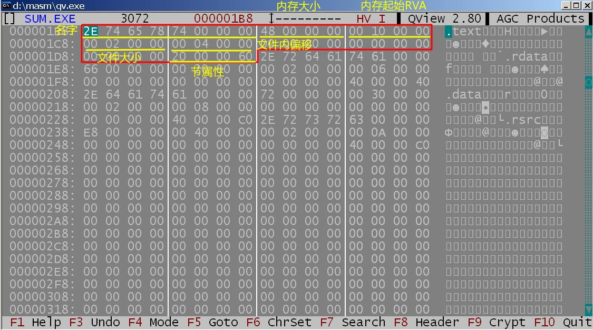 Section Table总是被存放在紧接在PE Header的地方。我们可以看到数据目录从PE+0x78开始，而且总是0x10项。所以开始地址就是PE+0x78+0x80。
节表由一系列的Section Header(0x28个字节)排列而成，每个结构用来描述一个节，结构的排列顺序和它们描述的节在文件中的排列顺序是一致的。全部有效结构的最后以一个空的Section Header作为结束。下面我们来看Section Header的定义：
typedef struct _IMAGE_SECTION_HEADER {
BYTE Name[IMAGE_SIZEOF_SHORT_NAME];
union {
DWORD PhysicalAddress;
DWORD VirtualSize;
} Misc;
DWORD VirtualAddress;
DWORD SizeOfRawData;
DWORD PointerToRawData;
DWORD PointerToRelocations;
DWORD PointerToLinenumbers;
WORD NumberOfRelocations;
WORD NumberOfLinenumbers;
DWORD Characteristics;
} IMAGE_SECTION_HEADER, *PIMAGE_SECTION_HEADER;
重要的信息如下所示：
| 相对于首字节的偏移 | 长度 | 含义 |
|---|---|---|
| +0 | 8 | 段的名字字符串，不需要末尾的0。段的名字是不重要的，只是约定俗成是那几个。 |
| +8 | 4 | 节的内存长度 |
| +C | 4 | 节的内存偏移，RVA。要对齐。 |
| +10 | 4 | 节的文件长度 |
| +14 | 4 | 节的文件内偏移，Physical offset。要对齐 |
| +24 | 4 | 节的属性(attribute) |
如何查看内存的内容在文件中的位置：RVA-RVA(Segment)+PA(Segment)
- 首先定位在哪个段
- 找到在这个段内的偏移，内存偏移-段的偏移
- 段内偏移+段的文件内偏移
输入表
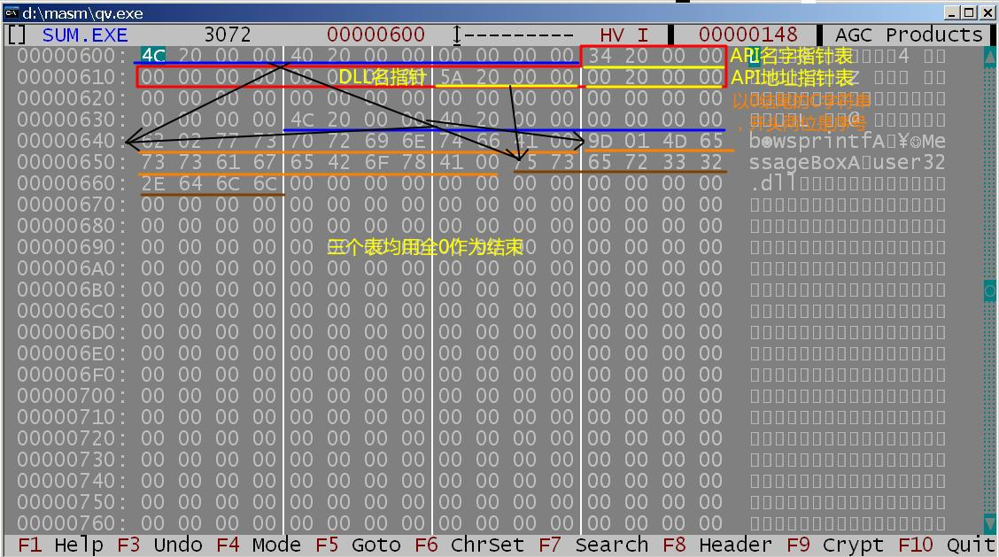 输入函数（Import Functions)**就是被程序调用但其执行代码又不在程序中的函数。只有动态链接函数才会产生这种情况。为了正确寻址到输入函数，我们需要输入表的帮助。并且显然，输入表的内容是需要**链接器和装载器共同配合的。
输入表中的每一项是0x14个字节，输入表的结束用0x14个0作为标志。输入表的C语言定义如下：
struct _IMAGE_IMPORT_DESCRIPTOR {
union {
DWORD Characteristics;
DWORD OriginalFirstThunk;
};
DWORD TimeDateStamp;
DWORD ForwarderChain;
DWORD Name;
DWORD FirstThunk;
} IMAGE_IMPORT_DESCRIPTOR;
重要的条目：
| 偏移 | 长度 | 内容 |
|---|---|---|
| +0 | 4 | 指针，指向API的名字指针表（RVA） |
| +C | 4 | 指向DLL的名字字符串（RVA） |
| +10 | 4 | 指针，指向API的地址指针表（RVA） |
API的名字指针表：每一项又是一个4byte的指针，指向API的名字字符串。表的结束用4个0作为标志。如果你发现表中的项最高位是1，那么这一项把最高位去除后是API的序号，不再是名字字符串指针了。这个名字字符串由两位的API序号和API的C字符串组成。
API的地址指针表：我们在文件中可以看到他和API的名字指针表的内容是一样的，但是在载入内存之后这张表是会变的。具体的说，就是会在这里填入我们调用函数在内存中的地址。我们上面讲API的重定位的时候，jmp后面的地址就是存储在这里。
需要注意的是，这里的DLL的名字字符串和API的名字字符串都是标准的C语言字符串，以0结尾。
输出表 DLL
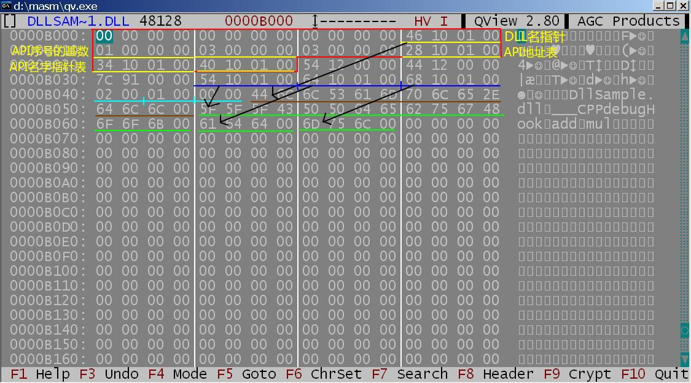
我们知道DLL是不可以独立运行的，那么DLL文件头处的AddressOfEntryPoint字段是什么意思呢。当操作系统把动态链接库载入内存的时候，会调用一次AddressOfEntryPoint处的代码，要做的工作可能一些初始化工作，我们把这一段代码称为dll main；也可能是一些释放工作。
一个DLL是一定会有输出表的，因为他要把提供的函数接口导出。注意到一个程序可能会引用多个外部的DLL，所以输入表的每一项要对应一个DLL。但是一个DLL是只能导出一个DLL的函数的（废话）。所以他们的结构有所不同。
typedef struct _IMAGE_EXPORT_DIRECTORY {
DWORD Characteristics; // 未使用，总为0
DWORD TimeDateStamp; // 文件创建时间戳
WORD MajorVersion; // 未使用，总为0
WORD MinorVersion; // 未使用，总为0
DWORD Name; // 指向一个代表此 DLL名字的 ASCII字符串的 RVA
DWORD Base; // 函数的起始序号
DWORD NumberOfFunctions; // 导出函数的总数
DWORD NumberOfNames; // 以名称方式导出的函数的总数
DWORD AddressOfFunctions; // 指向输出函数地址的RVA
DWORD AddressOfNames; // 指向输出函数名字的RVA
DWORD AddressOfNameOrdinals; // 指向输出函数序号的RVA
} IMAGE_EXPORT_DIRECTORY, *PIMAGE_EXPORT_DIRECTORY;
重要的条目：
| 偏移 | 长度 | 内容 |
|---|---|---|
| +C | 4 | 指向DLL的名字字符串（RVA） |
| +10 | 4 | API序号的基数，通常为1 |
| +18 | 4 | 表示一共导出的函数个数 |
| +1C | 4 | 指向API地址表RVA |
| +20 | 4 | 指向API名字指针表RVA |
| +24 | 4 | 指向API序号表RVA |
这个DLL名和DLL文件名没有必然的联系（虽然但是这不重要）。
API地址表：每一项是一个4 byte的指针，指向API函数的地址。API地址表的条目和上面两个不是一一对应的，我们要用api的序号作为index在API地址表里寻找API的地址。 API名字指针表：每一项又是一个4 byte的指针，指向API的名字字符串。但是表的结束不用4个0作为标志，因为我们已经存储了导出的函数个数。这里的名字字符串是单纯的C字符串，没有两位的前缀序号了。api名字指针表是字典序排列的。 API序号表：每一项是2 byte的序号。序号表和条目和名字指针表的条目是一一对应的。
- 找到API的名字
name_table[i] - 找到对应的API的序号
n=order_table[i] - 找到API的地址
address_table[n]
重定位表 DLL
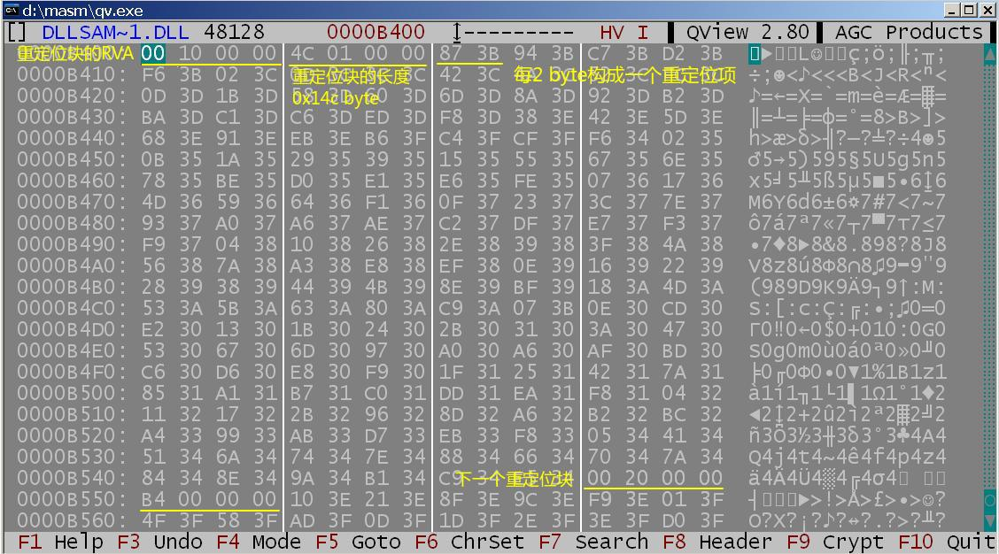 DLL内部的变量，在载入内存的时候，他们的地址可能发生变化。如果我们用的是相对地址，那还好；但是如果我们用的是绝对地址就完了，或者说我们在编译的时候不能确定运行时变量的地址。所以我们需要对DLL中的地址进行重定位。要重定位的只是偏移地址，在现在的windows里段地址都是0。
比如，base addr = 0x400000
dll中有这样一条语句：
mov eax, [401000h]
假设dll被载入到内存0x100000处，则指令需要修正为
mov eax, [101000h]
typedef struct _IMAGE_BASE_RELOCATION {
DWORD VirtualAddress; //RVA
DWORD SizeOfBlock;
} IMAGE_BASE_RELOCATION,* PIMAGE_BASE_RELOCATION;
WORD 重定位项RE [];
| 相对于首字节的偏移 | 长度 | 含义 |
|---|---|---|
| +0 | 4 | 重定位块的内存偏移 |
| +4 | 4 | 重定位块的长度 |
| +8 | 2 | 从第8字节开始，每两位构成一个重定位项 |
重定位项：高4位是一个标志，通常为0x3。低12位表示需要重定位的变量的相对偏移地址。
一个重定位表由多个大小SizeOfBlock的重定位块组成（不同块的SizeOfBlock大小不一）。每一个Block记录了0x1000即4KB大小的内存中需要重定位信息的地址（一页大小），这些地址以VirtualAdress为该页的基址，偏移地址占两个字节（0x1000最多需要12bit即可：0~0xFFF）。所以两个字节的低12位为偏移地址，而高4位就是一个标记，当此标记为0x3时低12bit才有效，否则该2个字节可能是为了对齐而产生的，并且为对齐而产生的字节其值全为0。
- 重定位块中的重定位项数=(重定位块长度-8)/2。
- 下一个重定位块的地址=当前重定位块的地址+当前重定位块长度，所以重定位块是一块紧接着一块的，他们一起构成了重定位表。
- 重定位方式（重定位发生在程序载入内存之后）：重定位多见于DLL，因为DLL的base address没什么用，装载到内存的位置是不一定的。
- 首先找到重定位项
RVA = VirtualAddress+ (RE[i]&0xFFF)，在内存中该项的地址为load_address+RVA - 对找到的重定位项x，进行
x = x - base_address + load_address的操作。
- 首先找到重定位项
API的重定位
我们在调用动态链接库DLL的函数的时候是需要在装载过程中进行重定位的，因为我们在编译和链接的时候无法确定函数的地址。
在电脑启动的时候，动态链接库就装载进内存了。windows提供的调用DLL的接口主要有3个：
/* 获得Dll的内存基地址（句柄）*/
hDll = LoadLibraryA(pDllName);
/* 获得API的地址，第二个参数可以是API的名字
* 也可以是API的序号+API基数
*/
p = GetProcAddress(hDll, pApiName/ApiOrdNum);
FreeLibrary
以sum.exe为例：
-
可以看到我们对
wsprintfAAPI的调用经历了一些复杂的过程，先是call 0x40103c，然后是jmp [0x042004]。我们查看[0x042004]，发现是77D1ABAD，也是wsprintfA的真实地址。 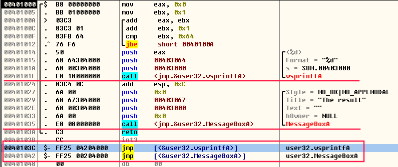 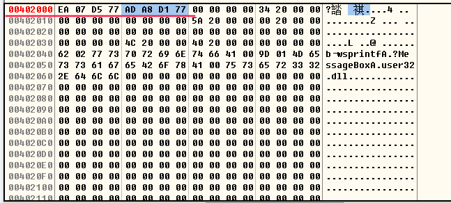 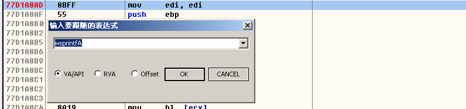 -
我们现在查看原来exe的文件内容，我们要把RVA 查看
0x604的值：0x2040。这个是RVA，对应的PVA=0x640 我们看0x640对应的内容：API的序号(2 byte)+API的名字；也就是说，这一部分的内容是装载到内存之后才填入的。 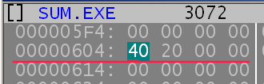 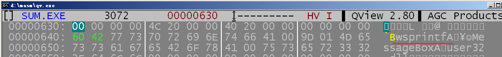 -
总结归纳一下，我们如果要调用DLL提供的函数，就去call跳转表；
跳转表的内容是
jmp [&输入表中某一个地址指针]至于这个输入表中的地址指针，就是loader填入的了。填入的依据，就是输入表提供的信息，DLL名和API名。
第四次作业-解析输入表
本来以为是一个简单的任务，结果一直从下午写到晚上9点。。还被C98折磨，不过下面的代码应该不是C98改装后的。效率更高的做法是利用多级指针。
#include <stdio.h>
typedef __INT32_TYPE__ DWORD;
typedef __INT16_TYPE__ WORD;
typedef struct
{
DWORD Paddr;
DWORD Psize;
DWORD Vaddr;
DWORD Vsize;
}SECTION_HEADER;
//全局变量
FILE* pe;
SECTION_HEADER section_table[0xff];
int section_num;
DWORD pehead;
/* 把RVA转换成PVA，PVA = RVA-section RVA+section PVA*/
DWORD rva2pva(DWORD rva);
/* 获得PE文件头的PVA */
DWORD get_pehead_offset();
/* 获得输入表的PVA */
DWORD get_input_offset();
/* 获得PE文件的section的数量 */
WORD get_section_num();
/* 按照格式输出输入表中的一项，返回输入表是否结束 */
int print_input_entry(DWORD entry_offset);
/* 从所给的文件偏移中得到一个C string存在buf中 */
int get_cstring(DWORD offset,char *buf);
/* 获得section table的PVA */
DWORD get_section_table_start();
/* 检查无误，建立section table，给section_num和section_table赋值*/
void set_section_table();
/* 分类输出API的编号或名字 */
void print_api_name(DWORD offset);
void print_api_name(DWORD offset)
{
DWORD buf;
char api_name[50];
// printf("API名 字符串表%X\n",offset);
while(1)
{
fseek(pe,offset,SEEK_SET);
fread((char *)&buf,4,1,pe);
if (buf==0) break;
if (buf&0x80000000)
sprintf(api_name,"%08X",buf&0x7FFFFFFF);
else
{
buf = rva2pva(buf)+2;
get_cstring(buf,api_name);
}
printf("%s\n",api_name);
offset+=4;
}
printf("\n");
return;
}
void set_section_table()
{
char buf[0x28];
int start = get_section_table_start(),i;
section_num = get_section_num();
// printf("节表的开头：0x%X\n",start);
fseek(pe,start,SEEK_SET);
for (i=0;i<section_num;i++)
{
fread(buf,0x28,1,pe);
section_table[i].Paddr = *(DWORD *)(buf+0x14);
section_table[i].Vaddr = *(DWORD *)(buf+0xC);
section_table[i].Psize = *(DWORD *)(buf+0x10);
section_table[i].Vsize = *(DWORD *)(buf+0x8);
// printf("0x%X\t0x%X\t0x%X\t0x%X\n",section_table[i].Paddr,section_table[i].Vaddr,section_table[i].Psize,section_table[i].Vsize);
}
}
WORD get_section_num()
{
WORD buf=0;
//section数量的值存在偏移0x6处
fseek(pe,pehead+0x6,SEEK_SET);
fread((char *)&buf,2,1,pe);
return buf;
}
DWORD get_section_table_start()
{
DWORD num_dir_entry;
DWORD offset;
//数据目录的项数值存在偏移0x74处
fseek(pe,pehead+0x74,SEEK_SET);
fread((char *)&num_dir_entry,4,1,pe);
// printf("数据目录的数量：0x%X\n",num_dir_entry);
offset = pehead+0x78+num_dir_entry*0x8;
return offset;
}
int get_cstring(DWORD offset,char *buf)
{
int i=0;
fseek(pe,offset,SEEK_SET);
do
{
fread(buf+i,1,1,pe);
} while (buf[i++]);
return i;
}
DWORD get_pehead_offset()
{
DWORD buf;
//[0x3c]是pehead的偏移
fseek(pe,0x3c,SEEK_SET);
fread((char *)&buf,4,1,pe);
return buf;
}
DWORD rva2pva(DWORD rva)
{
int i;
for (i=0;i<section_num;i++)
{
if (rva>=section_table[i].Vaddr && rva<section_table[i].Vaddr+section_table[i].Vsize)
return rva-section_table[i].Vaddr+section_table[i].Paddr;
}
return -1;
}
DWORD get_input_offset()
{
DWORD buf;
fseek(pe,0x80+pehead,SEEK_SET);
fread((char*)&buf,4,1,pe); //得到输入表的RVA
// printf("输入表的RVA：%X\n",buf);
buf = rva2pva(buf);
// printf("输入表的PVA：%X\n",buf);
return buf;
}
int print_input_entry(DWORD entry_offset)
{
int i;
char buf[0x14];
DWORD dll_offset,api_offset;
char dll_name[30];
// printf("entry offset:%X\n",entry_offset);
fseek(pe,entry_offset,SEEK_SET);
fread((char *)buf,0x14,1,pe);
for (i=0;i<0x14;i++)
if (buf[i]!=0) break;
if (i==0x14) return 0;
//dll名指针在偏移0xC处
dll_offset = rva2pva(*(DWORD *)(buf+0xC));
// printf("字符串的位置0x%X\n",dll_offset);
get_cstring(dll_offset,dll_name);
printf("%s:\n",dll_name);
//api名表指针在偏移0x0处
api_offset = rva2pva(*(DWORD *)(buf+0));
print_api_name(api_offset);
return 1;
}
int main()
{
char filename[100];
int input_offset;
//设置全局数据
scanf("%s",filename);
pe = fopen(filename,"rb");
if (pe==NULL)
{
printf("No such file\n");
return 0;
}
pehead = get_pehead_offset();
set_section_table();
input_offset = get_input_offset();
while (print_input_entry(input_offset))
input_offset += 0x14;
return 0;
}
Lesson9 PE脱壳
看雪脱壳新手教程，看雪脱壳教程。PECompact加的壳比较好脱，upx是一个开源的加壳工具，他可以自己脱自己。VMprotect用了虚拟机技术对exe的部分函数进行加密，是不可能脱壳的。armadillo、enigma相对VMprotect容易一些。
加壳：其实是利用特殊的算法，对可执行文件里的资源进行压缩，只不过这个压缩之后的文件，可以独立运行，解压过程完全隐蔽，都在内存中完成。它们附加在原程序上通过加载器载入内存后，先于原始程序执行，得到控制权，执行过程中对原始程序进行解密、还原，还原完成后再把控制权交还给原始程序，执行原来的代码部分。加上外壳后，原始程序代码在磁盘文件中一般是以加密后的形式存在的，只在执行时在内存中还原，这样就可以比较有效地防止破解者对程序文件的非法修改，同时也可以防止程序被静态反编译。
esp定律：shell会在开始的时候压入很多寄存器，返回的时候要把他们弹出。所以我们可以给最后入栈的那一块内存设一个断点**（硬件访问断点）**。然后执行，会在shell code返回的前夕断住。然后接下去调试几步就回到了原来正常的地方了。
olleydump插件是一个半自动的脱壳机。
GetModuleHandleA可以获得DLL的载入首地址（也就是所谓的Handler）
脱壳一般来说要做3件事情，然后就可以dump内存了：
- 恢复API地址表，因为API地址表载入内存之后是会被修改的。
- 找到原始的输入表的地址
- 找到原始的 eip
把exe从内存中dump出来之后，还要做这几件事情：
- 要记得对齐这件事情，要把文件对齐改成内存对齐，以及PE文件头后面的段描述符表也要修改
- 修改EIP，把它从shell code的地址指向原来的起始地址
- 修改输入表的地址指针，把它从shell code的输入表地址指向原来的输入表地址。
Lesson10 PE Patch
为了给某个exe增加一个功能，需要做2件事：
- 修改exe, 让它
h=LoadLibraryA("my.dll"); 再p=GetProcAddress(h, "MyFunc");最后call p - 用C或C++写my.dll, 导出函数MyFunc，把它载入内存。
但是没有这么简单。原来的程序不一定有这两个函数。所以我们需要在输入表中添加这个DLL，然后再用它。具体步骤如下：
- 增加一个新的段：要增加段的个数(0x6)，Section Header要增加一项，exe载入内存长度也要相应变大。这个段是留给我们新的输入表用的。我们要仔细修改Section Header新加的项。
- 可以把新增的段作为新的输入表的地址，修改原来的输入表地址指针0x80。然后我们填入原来输入表的内容和我们要加上去的内容，我们需要把DLL名、API名、都填进去，还要建立好API名字指针表和API地址表，然后再把输入表项填好，注意最后一定还是要有0x14个0。
- 然后调用我们的API的时候需要注意，我们要
call [API地址表对应的项]并且注意call是相对寻址的。 - 然后我们可能需要修改EIP让程序先执行我们的API（记得回去），也可能想修改中间的某条代码，这个就可以有很多种形式了。
另外，操作系统在载入DLL的时候，如果DLL还没有载入内存，默认从SYSTEM和exe所在目录寻找DLL文件。